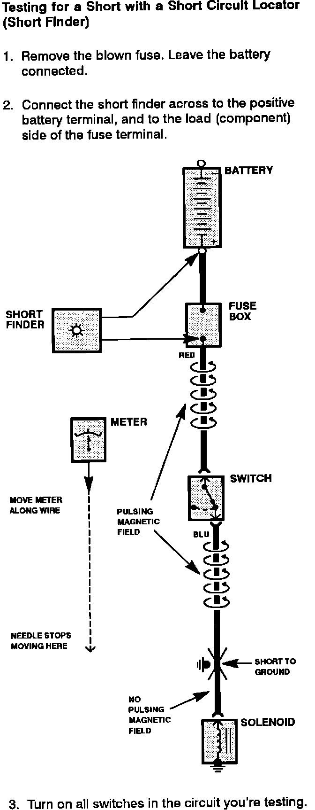

Testing For a Short With a Short Circuit Locator (Short Finder)
Troubleshooting Tests: Testing For A Short With A Short Circuit Locator (Short Finder):

Troubleshooting Tests: Testing For A Short With A Short Circuit Locator (Short Finder):